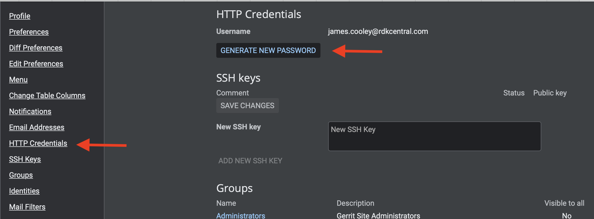
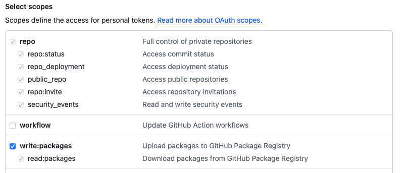
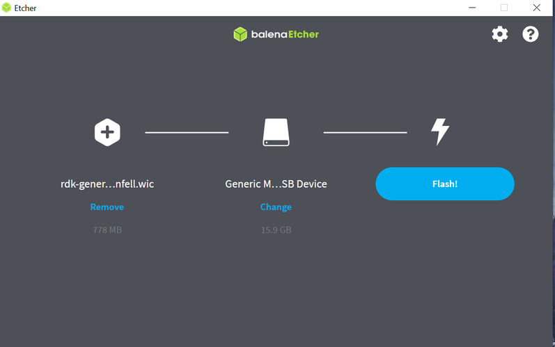
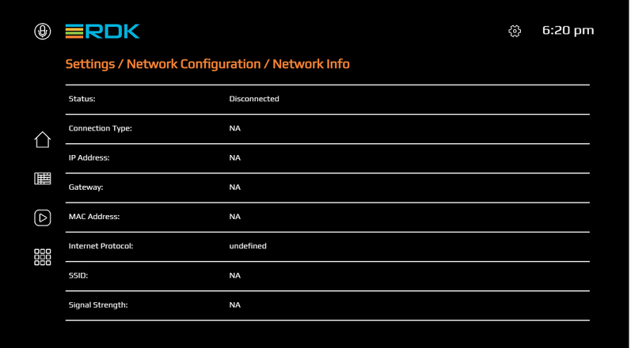

Try Out RDK7
This guide provides step-by-step instructions to create your own build and play around RDK using the popular open source platform Raspberry Pi 4 as the target device. The document covers the pre-requisites, build instructions , and detailed flashing instructions to get your Raspberry Pi up and running with RDK
Pre requisites
Host Setup
| Requirement | Yocto 4.0 (Kirkstone) |
|---|---|
| Linux | - 64 bit Ubuntu 20.04 LTS - Shell BASH System requirements |
| Free HDD Space | - RDKE OSS: 75GB - RDKE Vendor: 50GB - RDKE Middleware: 120GB - RDKE Application: 50GB - RDKE Image Assembler: 30GB |
| Host Tools Versions | - Git 1.8.3.1 or greater - tar 1.28 or greater - Python 3.9.0 or greater - gcc 10.1 or greater - GNU make 4.0 or greater |
| Raspberry Pi Kit | RPI4 |
Python Path
Ensure that python exists in /usr/bin/python. If not, create a softlink for /usr/bin/python to python executable.
$ which python
# should give
/usr/bin/python
Host Setup
The instructions provided below are meant to be executed via the command line on an Ubuntu machine.
# essential package installation
# super user mode is required
# major essential packages
$ sudo apt install ant build-essential chrpath cmake curl diffstat fd g++ g++-multilib gcc gcc-multilib \\
git git-flow git-man jq libbz2-dev libffi-dev libglib2.0-dev libldap2-dev liblzma-dev libncurses5-dev \\
libreadline-dev libsasl2-dev libsqlite3-dev libslang2-dev libssl-dev libxml2-dev libxmlsec1-dev \\
llvm make nnn python3.8 ripgrep sysstat texinfo tk-dev tree wget \\
xz-utils zip zlib1g-dev zstd
Locale Requirement
You also need to ensure you have the en_US.UTF-8 locale enabled. bash locale --all-locales | grep en_US.utf8
$ bash locale --all-locales | grep en_US.utf8
Configure repo
In order to use Yocto build system, first you need to make sure that repo is properly installed on the machine:
# create a bin directory
$ mkdir ~/bin
$ export PATH=~/bin:$PATH
# Download the repo tool and ensure that it is executable
$ curl http://commondatastorage.googleapis.com/git-repo-downloads/repo > ~/bin/repo
$ chmod a+x ~/bin/repo
Credentials
It is also recommended to put credentials in .netrc when interacting with the repo.
A sample .netrc file is illustrated below.
# RDK Central Gerrit
machine code.rdkcentral.com
login <RDK Central SSO email address>
password <PAT>
# RDK Central Github
machine github.com
login <Public GitHub UserID>
password <PAT>
Creating your PAT
PAT Requirement
Without proper PATs, you will not be able to clone, push, or interact with RDK Gerrit/GitHub repositories.
Gerrit
Set your Gerrit PAT here: https://code.rdkcentral.com/r/settings/#HTTPCredentials

GitHub
For GitHub to create a PAT navigate to Settings - Developer Settings - Personal access tokens - Tokens (classic)
- https://github.com/settings/profile ← click on "Developer settings" here
GitHub PAT Scopes
For Git actions (clone/push/pr) you need to select at least the following scopes: - repo - write:packages

Build Steps
The following steps describe how to build each of the required layers and finally generate a full stack image by building the image assembler layer.
Layer Dependency
Each layer depends on the IPKs generated by the previous layer. The IPK paths given are examples only — the actual path will depend on how you store your IPKs.
OSS Layer
$ repo init -u "https://github.com/rdkcentral/rdke-oss-manifest/" -b refs/tags/4.6.2-community -m rdk-arm.xml
$ repo sync
$ MACHINE=rdk-arm64 source ./scripts/setup-environment
$ bitbake lib32-packagegroup-oss-layer
build-rdk-arm64/tmp/deploy/ipk/rdk-arm64-oss/
-
Locate the
opkg-make-indexutility that is part of the native built components. For OSS layer, this should be located inbuild-rdk-arm64/tmp/work/x86_64-linux/opkg-utils-native/0.5.0-r0/git/opkg-make-index -
Run the opkg-make-index utility to create the IPK Package index
$ ./build-rdk-arm64/tmp/work/x86_64-linux/opkg-utils-native/0.5.0-r0/git/opkg-make-index ./build-rdk-arm64/tmp/deploy/ipk/rdk-arm64-oss/ > ./build-rdk-arm64/tmp/deploy/ipk/rdk-arm64-oss/Packages -
Compress the package index
$ cd build-rdk-arm64/tmp/deploy/ipk/rdk-arm64-oss/ $ gzip -c9 Packages > Packages.gz -
Copy or rsync the IPK feed into a location in the local file system, e.g. Rsyncing from
./build-rdk-arm64/tmp/deploy/ipk/rdk-arm64-oss/*to${HOME}/community_shared/rdk-arm64-oss/4.6.2-community/ipk/
OSS layer is a common layer and not platform specific. The above-mentioned configuration is building OSS for arm64 machine and can be reused for any platforms with the same configuration.
Vendor Layer
$ repo init -u "https://github.com/rdkcentral/vendor-manifest-raspberrypi/" -b refs/tags/RDK7-1.0.0 -m rdke-raspberrypi.xml
$ repo sync
"file:/" prefix and the "/" suffix are important.
- OSS IPK feed
Modify this file:
rdke/common/meta-oss-reference-release/conf/machine/include/oss.incand setOSS_IPK_SERVER_PATHto the IPK feed location in the local file system, e.g:OSS_IPK_SERVER_PATH = "file:/${HOME}/community_shared/rdk-arm64-oss/4.6.2-community/ipk/"
$ MACHINE=raspberrypi4-64-rdke source ./scripts/setup-environment
$ echo 'DEPLOY_IPK_FEED = "1"' >> conf/local.conf
$ bitbake lib32-packagegroup-vendor-layer (to build vendor layer IPK feed for other layers to consume)
OR
$ bitbake lib32-vendor-test-image (wrapper over packagegroup-vendor-layer to compile a bootable vendor layer test image)
./build-raspberrypi4-64-rdke/tmp/deploy/ipk/raspberrypi4-64-rdke-vendor/
- Copy or rsync the IPK feed into a location in the local file system, e.g. Rsyncing from
./build-raspberrypi4-64-rdke/tmp/deploy/ipk/raspberrypi4-64-rdke-vendor/*to${HOME}/community_shared/raspberrypi4-64-rdke-vendor/RDK7-1.0.0/ipk/
Middleware Layer
$ repo init -u "https://github.com/rdkcentral/middleware-manifest-rdke/" -b refs/tags/RDK7-1.0.0 -m raspberrypi4-64.xml
$ repo sync
Setup the IPK feed(s): Please note for local IPK feed in local file system, the "file:/" prefix and the "/" suffix are important
-
OSS IPK feed Modify the file
rdke/common/meta-oss-reference-release/conf/machine/include/oss.incand setOSS_IPK_SERVER_PATHto the IPK feed location in the local file system, e.g.OSS_IPK_SERVER_PATH = "file:/${HOME}/community_shared/rdk-arm64-oss/4.6.2-community/ipk/" -
Vendor IPK feed Modify the file
rdke/vendor/meta-vendor-release/conf/machine/include/vendor.incand setVENDOR_IPK_SERVER_PATHto the IPK feed location in the local file system, e.g.VENDOR_IPK_SERVER_PATH = "file:/${HOME}/community_shared/raspberrypi4-64-rdke-vendor/RDK7-1.0.0/ipk/"
$ MACHINE=raspberrypi4-64-rdke source ./scripts/setup-environment
$ echo 'DEPLOY_IPK_FEED = "1"' >> conf/local.conf
$ bitbake lib32-packagegroup-middleware-layer (to build middleware layer IPK feed for other layers to consume)
OR
$ bitbake lib32-middleware-test-image (wrapper over packagegroup-middleware-layer to compile a bootable middleware layer test image)
At least one of packagegroup or test-image is required to be successful to produce the IPK feed for the next layer. The produced IPK objects that can be packaged into the Middleware IPK feed can be found at ./build-raspberrypi4-64-rdke/tmp/deploy/ipk/raspberrypi4-64-rdke-middleware/
- Copy or rsync the IPK feed into a location in the local file system, e.g. Rsyncing from
./build-raspberrypi4-64-rdke/tmp/deploy/ipk/raspberrypi4-64-rdke-middleware/*to${HOME}/community_shared/raspberrypi4-64-rdke-middleware/RDK7-1.0.0/ipk/
Application Layer
$ repo init -u "https://github.com/rdkcentral/application-manifest-rdke/" -b refs/tags/RDK7-1.0.0 -m raspberrypi4-64.xml
$ repo sync
Setup the IPK feed(s): Please note for local IPK feed in local file system, the "file:/" prefix and the "/" suffix are important
-
OSS IPK feed Modify the file
rdke/common/meta-oss-reference-release/conf/machine/include/oss.incand setOSS_IPK_SERVER_PATHto the IPK feed location in the local file system. e.g.OSS_IPK_SERVER_PATH = "file:/${HOME}/community_shared/rdk-arm64-oss/4.6.2-community/ipk/" -
Vendor IPK feed Modify the file
rdke/vendor/meta-vendor-release/conf/machine/include/vendor.incand setVENDOR_IPK_SERVER_PATHto the IPK feed location in the local file system. e.g.VENDOR_IPK_SERVER_PATH = "file:/${HOME}/community_shared/raspberrypi4-64-rdke-vendor/RDK7-1.0.0/ipk/" -
Middleware IPK feed Modify the file
rdke/middleware/meta-middleware-release/conf/machine/include/middleware.incand setMW_IPK_SERVER_PATHto the IPK feed location in the local file system. e.g.MW_IPK_SERVER_PATH = "file:/${HOME}/community_shared/raspberrypi4-64-rdke-middleware/RDK7-1.0.0/ipk/"
$ MACHINE=raspberrypi4-64-rdke source ./scripts/setup-environment
$ echo 'DEPLOY_IPK_FEED = "1"' >> conf/local.conf
$ bitbake lib32-packagegroup-application-layer (to build application layer IPK feed for other layers to consume)
OR
$ bitbake lib32-application-test-image (wrapper over packagegroup-application-layer to compile a bootable application layer test image)
At least one of packagegroup or test-image is required to be successful to produce the IPK feed for the next layer. The produced IPK objects that can be packaged into the Application IPK feed can be found at ./build-raspberrypi4-64-rdke/tmp/deploy/ipk/raspberrypi4-64-rdke-application/
- Copy or rsync the IPK feed into a location in the local file system. e.g. Rsyncing from
./build-raspberrypi4-64-rdke/tmp/deploy/ipk/raspberrypi4-64-rdke-application/*to${HOME}/community_shared/raspberrypi4-64-rdke-application/RDK7-1.0.0/ipk/
Image Assembler
$ repo init -u "https://github.com/rdkcentral/image-assembler-manifest-rdke/" -b refs/tags/RDK7-1.0.0 -m raspberrypi4-64.xml
$ repo sync
Setup the IPK feed(s): Please note for local IPK feed in local file system, the "file:/" prefix and the "/" suffix are important
-
OSS IPK feed Modify the file
rdke/common/meta-oss-reference-release/conf/machine/include/oss.incand setOSS_IPK_SERVER_PATHto the IPK feed location in the local file system. e.g.OSS_IPK_SERVER_PATH = "file:/${HOME}/community_shared/rdk-arm64-oss/4.6.2-community/ipk/" -
Vendor IPK feed Modify the file
rdke/vendor/meta-vendor-release/conf/machine/include/vendor.incand setVENDOR_IPK_SERVER_PATHto the IPK feed location in the local file system. e.g.VENDOR_IPK_SERVER_PATH = "file:/${HOME}/community_shared/raspberrypi4-64-rdke-vendor/RDK7-1.0.0/ipk/" -
Middleware IPK feed Modify the file
rdke/middleware/meta-middleware-release/conf/machine/include/middleware.incand setMW_IPK_SERVER_PATHto the IPK feed location in the local file system. e.g.MW_IPK_SERVER_PATH = "file:/${HOME}/community_shared/raspberrypi4-64-rdke-middleware/RDK7-1.0.0/ipk/" -
Application IPK feed Modify the file
rdke/application/meta-application-release/conf/machine/include/application.incand setAPPLICATION_IPK_SERVER_PATHto the IPK feed location in the local file system. e.g.APPLICATION_IPK_SERVER_PATH = "file:/${HOME}/community_shared/raspberrypi4-64-rdke-application/RDK7-1.0.0/ipk/"
$ MACHINE=raspberrypi4-64-rdke source ./scripts/setup-environment
$ bitbake lib32-rdk-fullstack-image (for full stack image)
#(Final flash'able image will be present in ./build-raspberrypi4-64-rdke/tmp/deploy/images/raspberrypi4-64-rdke/<imagename>.wic.bz2)
Flashing Instructions
The micro SD card should be formatted before writing the RPI image to it. After flashing, remove the SD card and insert it to the Raspberry Pi 4 device' SD card slot.
SD Card Requirement
The minimum SD card size recommended is 8GB Prefer 16GB or 32GB for apps support in RDK
Using Linux
Using dd on linux/macOS:
bzcat <IMAGE_NAME>.wic.bz2 | sudo dd of=/dev/sdb bs=4M iflag=fullblock oflag=direct conv=fsync
Using Windows
Using balenaEtcher:
To flash the image on an SD card, you will need to download the balenaEtcher application - https://www.balena.io/etcher/
Steps
- Open the application → Select the image from your download folder
- Select the drive containing your SD card
- Click Flash to copy the image


BalenaEtcher Stuck at 7%
In some cases, latest versions of BalenaEtcher freeze at 7% flashing If this happens, downgrade to version 1.18.11.

Power on the Raspberry Pi:
- TV screen will display the default RDK UI as shown below.

- To view the Raspberry Pi's IP address(referred as machineIP from now), Go to 'Settings → Network Configuration → Network Info → check for 'IP Address'' .

- For ssh, we can use
ssh root@ip-address - For verifying the image details, we can use
cat /version.txtcommand